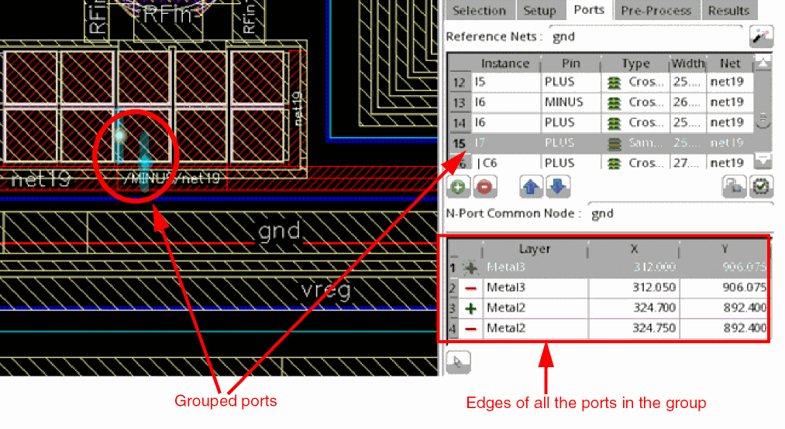

Grouping Ports Created for Clarity Models
You can group ports with the same electrical potential so that the simulator considers them as a single port. Grouping improves simulation performance by reducing the actual number of ports to be managed by the simulator.
- Select two or more ports in the ports table.
-
Right-click and choose Group Ports.
The grouped ports are collapsed into one.
Observe the following for the port group:
- Only the top most port in the selected set is visible and other ports are hidden.
- The edge details of all the ports in the port group are displayed in the edge details of the visible port.
-
When you select the port group in the Ports tab, all the ports in the group are highlighted in the layout canvas.

To dissolve a port group, right-click the group in the ports table and choose Ungroup Port. The rows for ports that were grouped are displayed at the end of the ports table.
Return to top